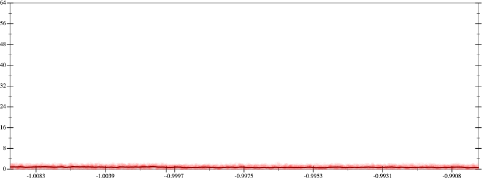
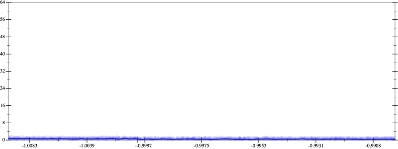
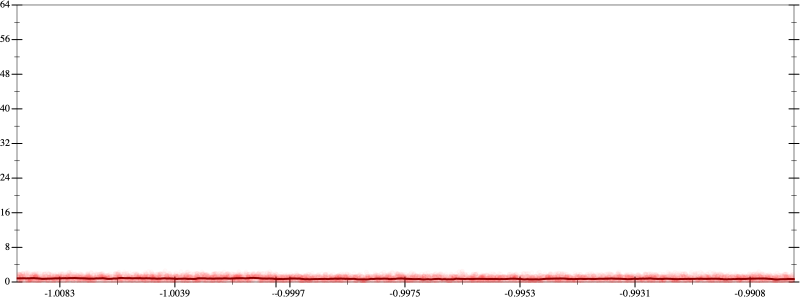
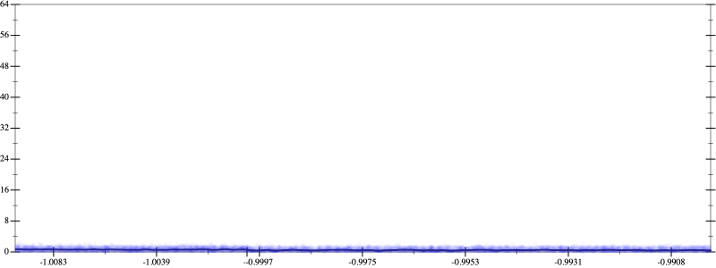

Initial program 0.7
\[\left(\left(\left(\left(\left(\left(\left(\left(\left(\left(\left(\left(1.0 + -18.0 \cdot x\right) + 76.5 \cdot \left(x \cdot x\right)\right) + -136.0 \cdot \left(\left(x \cdot x\right) \cdot x\right)\right) + 127.5 \cdot \left(\left(\left(x \cdot x\right) \cdot x\right) \cdot x\right)\right) + -71.4 \cdot \left(\left(\left(\left(x \cdot x\right) \cdot x\right) \cdot x\right) \cdot x\right)\right) + 25.783333 \cdot \left(\left(\left(\left(\left(x \cdot x\right) \cdot x\right) \cdot x\right) \cdot x\right) \cdot x\right)\right) + -6.314286 \cdot \left(\left(\left(\left(\left(\left(x \cdot x\right) \cdot x\right) \cdot x\right) \cdot x\right) \cdot x\right) \cdot x\right)\right) + 1.085268 \cdot \left(\left(\left(\left(\left(\left(\left(x \cdot x\right) \cdot x\right) \cdot x\right) \cdot x\right) \cdot x\right) \cdot x\right) \cdot x\right)\right) + -0.133984 \cdot \left(\left(\left(\left(\left(\left(\left(\left(x \cdot x\right) \cdot x\right) \cdot x\right) \cdot x\right) \cdot x\right) \cdot x\right) \cdot x\right) \cdot x\right)\right) + 0.012059 \cdot \left(\left(\left(\left(\left(\left(\left(\left(\left(x \cdot x\right) \cdot x\right) \cdot x\right) \cdot x\right) \cdot x\right) \cdot x\right) \cdot x\right) \cdot x\right) \cdot x\right)\right) + -0.000797 \cdot \left(\left(\left(\left(\left(\left(\left(\left(\left(\left(x \cdot x\right) \cdot x\right) \cdot x\right) \cdot x\right) \cdot x\right) \cdot x\right) \cdot x\right) \cdot x\right) \cdot x\right) \cdot x\right)\right) + 3.9 \cdot 10^{-05} \cdot \left(\left(\left(\left(\left(\left(\left(\left(\left(\left(\left(x \cdot x\right) \cdot x\right) \cdot x\right) \cdot x\right) \cdot x\right) \cdot x\right) \cdot x\right) \cdot x\right) \cdot x\right) \cdot x\right) \cdot x\right)\right) + -1 \cdot 10^{-06} \cdot \left(\left(\left(\left(\left(\left(\left(\left(\left(\left(\left(\left(x \cdot x\right) \cdot x\right) \cdot x\right) \cdot x\right) \cdot x\right) \cdot x\right) \cdot x\right) \cdot x\right) \cdot x\right) \cdot x\right) \cdot x\right) \cdot x\right)\]
Applied simplify0.5
\[\leadsto \color{blue}{\left(\left(\left(\left(-6.314286 \cdot x\right) \cdot \left({x}^{3} \cdot {x}^{3}\right) + \left(\left(x \cdot x\right) \cdot \left(x \cdot x\right)\right) \cdot \left(\left(x \cdot x\right) \cdot 25.783333\right)\right) + \left(\left(\left(\left(-136.0 \cdot x\right) \cdot \left(x \cdot x\right) + 1.0\right) + x \cdot \left(-18.0 + x \cdot 76.5\right)\right) + \left({x}^{3} \cdot \left(x \cdot 127.5\right) + \left(-71.4 \cdot x\right) \cdot \left(\left(x \cdot x\right) \cdot \left(x \cdot x\right)\right)\right)\right)\right) + \left(\left({x}^{3} \cdot {x}^{3}\right) \cdot \left(\left(x \cdot x\right) \cdot 1.085268\right) + \left(\left(\left(\left(x \cdot x\right) \cdot \left(x \cdot x\right)\right) \cdot \left(\left(x \cdot x\right) \cdot \left(x \cdot x\right)\right)\right) \cdot \left(x \cdot -0.133984\right) + \left(\left(\left(x \cdot x\right) \cdot \left(x \cdot x\right)\right) \cdot \left(\left(x \cdot x\right) \cdot \left(x \cdot x\right)\right)\right) \cdot \left(\left(x \cdot x\right) \cdot 0.012059\right)\right)\right)\right) + \left(\left(\left(\left({x}^{3} \cdot {x}^{3}\right) \cdot {x}^{3}\right) \cdot \left(\left(x \cdot x\right) \cdot -0.000797\right) + \left(\left({x}^{3} \cdot {x}^{3}\right) \cdot \left(\left(x \cdot x\right) \cdot \left(x \cdot x\right)\right)\right) \cdot \left(\left(x \cdot x\right) \cdot 3.9 \cdot 10^{-05}\right)\right) + \left(\left(\left(\left(x \cdot x\right) \cdot \left(x \cdot x\right)\right) \cdot \left(\left(x \cdot x\right) \cdot \left(x \cdot x\right)\right)\right) \cdot \left(\left(x \cdot x\right) \cdot \left(x \cdot x\right)\right)\right) \cdot \left(x \cdot -1 \cdot 10^{-06}\right)\right)}\]
Taylor expanded around inf 0.5
\[\leadsto \left(\left(\left(\left(-6.314286 \cdot x\right) \cdot \left({x}^{3} \cdot {x}^{3}\right) + \left(\left(x \cdot x\right) \cdot \left(x \cdot x\right)\right) \cdot \left(\left(x \cdot x\right) \cdot 25.783333\right)\right) + \left(\left(\left(\left(-136.0 \cdot x\right) \cdot \left(x \cdot x\right) + 1.0\right) + x \cdot \left(-18.0 + x \cdot 76.5\right)\right) + \left({x}^{3} \cdot \left(x \cdot 127.5\right) + \left(-71.4 \cdot x\right) \cdot \left(\left(x \cdot x\right) \cdot \left(x \cdot x\right)\right)\right)\right)\right) + \left(\left({x}^{3} \cdot {x}^{3}\right) \cdot \left(\left(x \cdot x\right) \cdot 1.085268\right) + \left(\color{blue}{{x}^{8}} \cdot \left(x \cdot -0.133984\right) + \left(\left(\left(x \cdot x\right) \cdot \left(x \cdot x\right)\right) \cdot \left(\left(x \cdot x\right) \cdot \left(x \cdot x\right)\right)\right) \cdot \left(\left(x \cdot x\right) \cdot 0.012059\right)\right)\right)\right) + \left(\left(\left(\left({x}^{3} \cdot {x}^{3}\right) \cdot {x}^{3}\right) \cdot \left(\left(x \cdot x\right) \cdot -0.000797\right) + \left(\left({x}^{3} \cdot {x}^{3}\right) \cdot \left(\left(x \cdot x\right) \cdot \left(x \cdot x\right)\right)\right) \cdot \left(\left(x \cdot x\right) \cdot 3.9 \cdot 10^{-05}\right)\right) + \left(\left(\left(\left(x \cdot x\right) \cdot \left(x \cdot x\right)\right) \cdot \left(\left(x \cdot x\right) \cdot \left(x \cdot x\right)\right)\right) \cdot \left(\left(x \cdot x\right) \cdot \left(x \cdot x\right)\right)\right) \cdot \left(x \cdot -1 \cdot 10^{-06}\right)\right)\]
Applied simplify0.5
\[\leadsto \color{blue}{\left(\left(\left(\left(\left(x \cdot x\right) \cdot \left(x \cdot x\right)\right) \cdot \left(\left(x \cdot x\right) \cdot \left(x \cdot x\right)\right)\right) \cdot \left(\left(x \cdot x\right) \cdot \left(\left(x \cdot x\right) \cdot \left(x \cdot -1 \cdot 10^{-06}\right)\right)\right) + {\left(x \cdot x\right)}^{3} \cdot \left(\left(\left(x \cdot x\right) \cdot \left(x \cdot x\right)\right) \cdot \left(-0.000797 \cdot x\right) + \left(x \cdot \left(3.9 \cdot 10^{-05} \cdot x\right)\right) \cdot \left(\left(x \cdot x\right) \cdot \left(x \cdot x\right)\right)\right)\right) + \left(\left(\left({\left(x \cdot x\right)}^{3} \cdot \left(-6.314286 \cdot x\right) + \left(\left(25.783333 \cdot x\right) \cdot x\right) \cdot \left(\left(x \cdot x\right) \cdot \left(x \cdot x\right)\right)\right) + \left(\left(x \cdot 127.5\right) \cdot {x}^{3} + \left(\left(x \cdot x\right) \cdot \left(-71.4 \cdot x\right)\right) \cdot \left(x \cdot x\right)\right)\right) + \left(\left(x \cdot x\right) \cdot \left(-136.0 \cdot x\right) + \left(\left(1.0 + -18.0 \cdot x\right) + \left(x \cdot x\right) \cdot 76.5\right)\right)\right)\right) + \left(\left(\left(\left(0.012059 \cdot x\right) \cdot x\right) \cdot \left(\left(x \cdot x\right) \cdot \left(x \cdot x\right)\right)\right) \cdot \left(\left(x \cdot x\right) \cdot \left(x \cdot x\right)\right) + \left({\left(x \cdot x\right)}^{3} \cdot \left(1.085268 \cdot \left(x \cdot x\right)\right) + \left(-0.133984 \cdot x\right) \cdot {x}^{8}\right)\right)}\]
Taylor expanded around -inf 0.5
\[\leadsto \left(\left(\left(\left(\left(x \cdot x\right) \cdot \left(x \cdot x\right)\right) \cdot \left(\left(x \cdot x\right) \cdot \left(x \cdot x\right)\right)\right) \cdot \left(\left(x \cdot x\right) \cdot \left(\left(x \cdot x\right) \cdot \left(x \cdot -1 \cdot 10^{-06}\right)\right)\right) + \color{blue}{{\left(\frac{-1}{x}\right)}^{-6}} \cdot \left(\left(\left(x \cdot x\right) \cdot \left(x \cdot x\right)\right) \cdot \left(-0.000797 \cdot x\right) + \left(x \cdot \left(3.9 \cdot 10^{-05} \cdot x\right)\right) \cdot \left(\left(x \cdot x\right) \cdot \left(x \cdot x\right)\right)\right)\right) + \left(\left(\left({\left(x \cdot x\right)}^{3} \cdot \left(-6.314286 \cdot x\right) + \left(\left(25.783333 \cdot x\right) \cdot x\right) \cdot \left(\left(x \cdot x\right) \cdot \left(x \cdot x\right)\right)\right) + \left(\left(x \cdot 127.5\right) \cdot {x}^{3} + \left(\left(x \cdot x\right) \cdot \left(-71.4 \cdot x\right)\right) \cdot \left(x \cdot x\right)\right)\right) + \left(\left(x \cdot x\right) \cdot \left(-136.0 \cdot x\right) + \left(\left(1.0 + -18.0 \cdot x\right) + \left(x \cdot x\right) \cdot 76.5\right)\right)\right)\right) + \left(\left(\left(\left(0.012059 \cdot x\right) \cdot x\right) \cdot \left(\left(x \cdot x\right) \cdot \left(x \cdot x\right)\right)\right) \cdot \left(\left(x \cdot x\right) \cdot \left(x \cdot x\right)\right) + \left({\left(x \cdot x\right)}^{3} \cdot \left(1.085268 \cdot \left(x \cdot x\right)\right) + \left(-0.133984 \cdot x\right) \cdot {x}^{8}\right)\right)\]
Applied simplify0.5
\[\leadsto \color{blue}{\left(\left(\left(\left(x \cdot x\right) \cdot \left(x \cdot x\right)\right) \cdot \left(3.9 \cdot 10^{-05} \cdot \left(x \cdot x\right) + -0.000797 \cdot x\right)\right) \cdot {\left(\frac{-1}{x}\right)}^{-6} + \left(\left({\left(x \cdot x\right)}^{3} \cdot \left(\left(x \cdot x\right) \cdot \left(x \cdot x\right)\right)\right) \cdot \left(\left(x \cdot -1 \cdot 10^{-06}\right) \cdot \left(x \cdot x\right)\right) + \left(\left(\left(\left(x \cdot x\right) \cdot \left(x \cdot x\right)\right) \cdot \left(\left(x \cdot x\right) \cdot 25.783333\right) + \left(\left(x \cdot -6.314286\right) \cdot \left(x \cdot x\right)\right) \cdot \left(\left(x \cdot x\right) \cdot \left(x \cdot x\right)\right)\right) + \left(\left(\left(-71.4 \cdot x\right) \cdot \left(x \cdot x\right)\right) \cdot \left(x \cdot x\right) + {x}^{3} \cdot \left(x \cdot 127.5\right)\right)\right)\right)\right) + \left(\left(\left(\left(x \cdot -136.0\right) \cdot \left(x \cdot x\right) + 1.0\right) + x \cdot \left(-18.0 + 76.5 \cdot x\right)\right) + \left({x}^{8} \cdot \left(x \cdot -0.133984\right) + \left({\left(x \cdot x\right)}^{\left(3 + 1\right)} \cdot \left(0.012059 \cdot \left(x \cdot x\right)\right) + {\left(x \cdot x\right)}^{3} \cdot \left(\left(x \cdot x\right) \cdot 1.085268\right)\right)\right)\right)}\]
Taylor expanded around 0 0.5
\[\leadsto \left(\left(\left(\left(x \cdot x\right) \cdot \left(x \cdot x\right)\right) \cdot \left(3.9 \cdot 10^{-05} \cdot \left(x \cdot x\right) + -0.000797 \cdot x\right)\right) \cdot {\left(\frac{-1}{x}\right)}^{-6} + \left(\left({\left(x \cdot x\right)}^{3} \cdot \left(\left(x \cdot x\right) \cdot \left(x \cdot x\right)\right)\right) \cdot \left(\left(x \cdot -1 \cdot 10^{-06}\right) \cdot \left(x \cdot x\right)\right) + \left(\left(\left(\left(x \cdot x\right) \cdot \left(x \cdot x\right)\right) \cdot \left(\left(x \cdot x\right) \cdot 25.783333\right) + \left(\left(x \cdot -6.314286\right) \cdot \left(x \cdot x\right)\right) \cdot \left(\left(x \cdot x\right) \cdot \left(x \cdot x\right)\right)\right) + \left(\left(\left(-71.4 \cdot x\right) \cdot \left(x \cdot x\right)\right) \cdot \left(x \cdot x\right) + {x}^{3} \cdot \left(x \cdot 127.5\right)\right)\right)\right)\right) + \left(\left(\left(\left(x \cdot -136.0\right) \cdot \left(x \cdot x\right) + 1.0\right) + x \cdot \left(-18.0 + 76.5 \cdot x\right)\right) + \left({x}^{8} \cdot \left(x \cdot -0.133984\right) + \left(\color{blue}{{x}^{8}} \cdot \left(0.012059 \cdot \left(x \cdot x\right)\right) + {\left(x \cdot x\right)}^{3} \cdot \left(\left(x \cdot x\right) \cdot 1.085268\right)\right)\right)\right)\]
Applied simplify0.5
\[\leadsto \color{blue}{\left(\left(\left({\left(\frac{-1}{x}\right)}^{-6} \cdot \left(\left(x \cdot x\right) \cdot \left(x \cdot x\right)\right)\right) \cdot \left(x \cdot \left(3.9 \cdot 10^{-05} \cdot x + -0.000797\right)\right) + \left({\left(x \cdot x\right)}^{\left(3 + 1\right)} \cdot \left(x \cdot x\right)\right) \cdot \left(\left(x \cdot -1 \cdot 10^{-06}\right) \cdot \left(x \cdot x\right)\right)\right) + \left(\left(\left(x \cdot x\right) \cdot \left(x \cdot x\right)\right) \cdot \left(\left(x \cdot 25.783333\right) \cdot x + \left(-6.314286 \cdot x\right) \cdot \left(x \cdot x\right)\right) + \left(\left(\left(x \cdot x\right) \cdot \left(-71.4 \cdot x\right)\right) \cdot \left(x \cdot x\right) + \left(x \cdot 127.5\right) \cdot {x}^{3}\right)\right)\right) + \left(\left(\left(\left(\left(1.0 + -18.0 \cdot x\right) + 76.5 \cdot \left(x \cdot x\right)\right) + \left(-136.0 \cdot x\right) \cdot \left(x \cdot x\right)\right) + {x}^{8} \cdot \left(-0.133984 \cdot x + \left(x \cdot x\right) \cdot 0.012059\right)\right) + {\left(x \cdot x\right)}^{\left(3 + 1\right)} \cdot 1.085268\right)}\]
 
